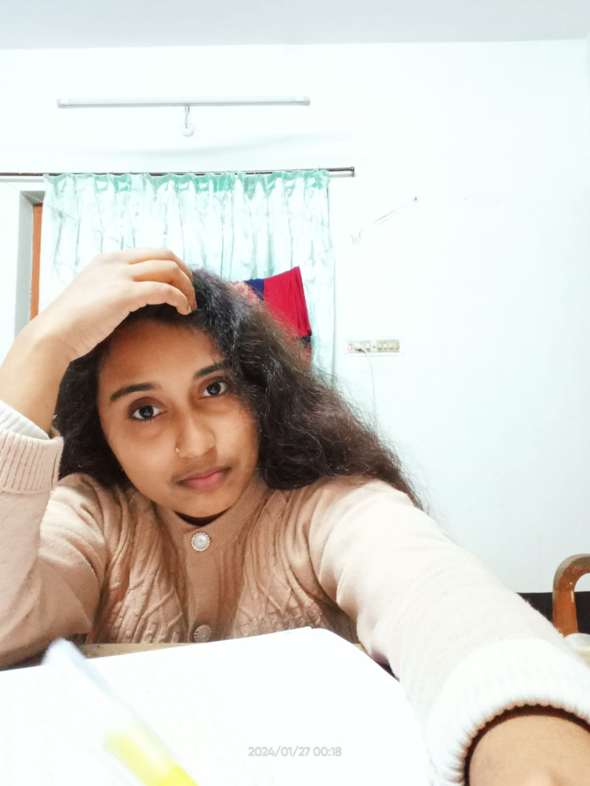
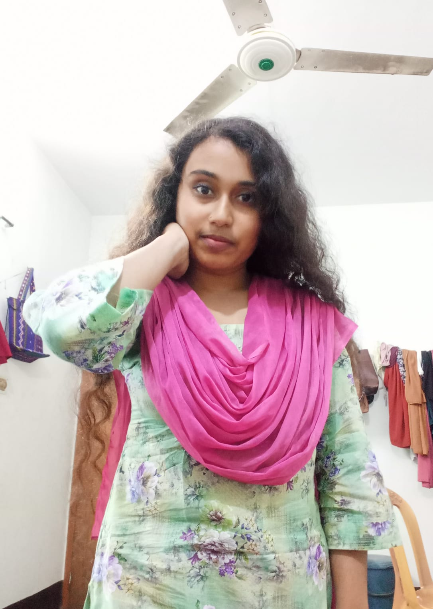
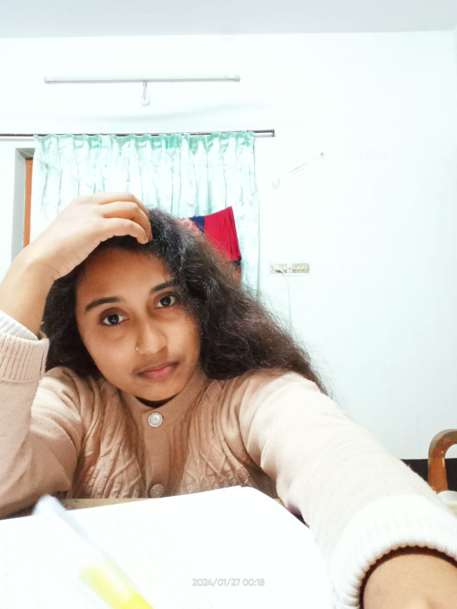
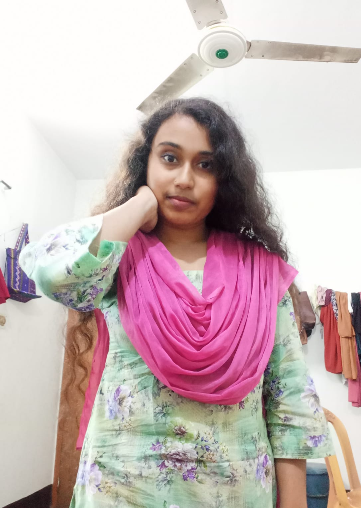

Valobasle Bole Dio
যে নারীর ভালোবাসা যে পুরুষ পেয়েছে, সে ভাগ্যবান পুরুষ...
নারীর সত্যিকারের ভালোবাসা সব পুরুষ পায় না...
ঐ পুরুষই নারীর সত্যিকারের ভালোবাসা পেয়েছে, যে নারীকে বুঝতে শিখেছে...
সম্মান করতে শিখেছে...
একজন অকৃতজ্ঞ কাপুরুষের কাছে নারীরা তার ভালোবাসা দান করে না !!"
love & enjoy
অন্তর বলে চাহিয়োনা তাহারে ,
নয়ন না বলেই অশ্রুসিক্ততায় ডুবে যায় সহস্র অভিযোগে ,
দূরে যতোই সরে যেতে চাই ,
নিকটে ততই বেঁধে যাই গোপন শত শতাব্দী ডোরে ,,
ভালোবাসি না বলেই হয়তো এতো বেশি ভালোবাসি নিষেদের মায়াকে ,,
ভালো থাকা যায়না কোনো ভাবেই অজস্র ভালো থাকার কারনে ,
কোলোহলে তাই তো খুঁজে পাই শুধুই নিরবতার আর্তনাদ !
ভালো থাকার মুহুর্তগুলি তাই তো মিশে যায় অবসাদের মাঝে ,
ভালো না থেকেও তাই তো বলে যাই ,
এইতো আছি বেশ ভালোই তুমিহীনা এই ভুবনে ....
বিষাদের মিছিলে তাই জ্বেলে দিতে চাই
হাসিমাখা মশালের আলোকিরণ ৷৷৷
Harami
Soitan